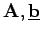
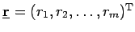
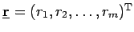
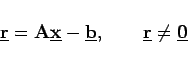
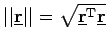

Inhalt Index DeskTop Bronstein

 Lineare Algebra Lineare Gleichungssysteme Überbestimmte lineare Gleichungssysteme Überbestimmte lineare Gleichungssysteme und lineare Quadratmittelprobleme
Lineare Algebra Lineare Gleichungssysteme Überbestimmte lineare Gleichungssysteme Überbestimmte lineare Gleichungssysteme und lineare Quadratmittelprobleme


Wenn (4.117) das mathematische Modell eines praktischen Vorganges darstellt ( und  reell), dann werden auf Grund von Meßfehlern oder anderen Fehlern die einzelnen Gleichungen von (4.117) nicht exakt erfüllbar sein, sondern es wird sich ein Restvektor  mit
reell), dann werden auf Grund von Meßfehlern oder anderen Fehlern die einzelnen Gleichungen von (4.117) nicht exakt erfüllbar sein, sondern es wird sich ein Restvektor  mit
|  | (4.118) |
ergeben. In diesem Falle wird man  so bestimmen, daß
so bestimmen, daß
gilt, d.h., daß die Fehlerquadratsumme minimal wird. Dieses Prinzip geht auf GAUSS zurück. Man bezeichnet (4.119) auch als lineares Quadratmittelproblem. Die Norm  des Restvektors  heißt Residuum.
heißt Residuum.